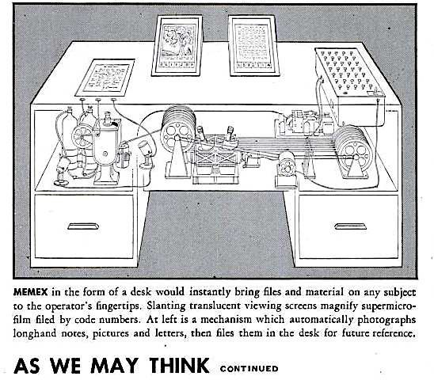

 “As We May Think,” by Vannevar Bush, is an essay written in 1945 about Bush’s idea of the “Memex,” which is a conceptual data storage and retrieval system. The idea of the “Memex” was to help people have access to a massive amount of recorded knowledge, basically a stepping stone towards the internet. The data in the “Memex” would be organized based on personalized associations because Bush thought it would be a similar comparison to the organization of information in the human brain. What I found interesting about this essay is the apparent technological predictions Bush is making, focusing on things such as film, photography, digitization, and hypertext communications.
"Mendel's concept of the laws of genetics was lost to the world for a generation because his publication did not reach the few who were capable of grasping and extending it; and this sort of catastrophe is undoubtedly being repeated all about us, as truly significant attainments become lost in the mass of the inconsequential."
Bush is able to bring light to his points, with a comparison to Mendel, something that is extremely important yet we never think about. We rarely think about the amount of knowledge and ideas that are lost to us due to simple things like neglect and lack of societal reach.
The 2010 article, “Long Live the Web” was written by world wide web inventor, Tim Berners Lee, who is worried about the future of the web he intended to create. He discusses internet privacy and how it continuously is being threatened by things like the government and large corporations. Lee created the world wide web with the idea of freedom and expression for all, without restrictions and regulations, so he is upset to see how it has been progressing more and more away from that. This is extremely relevant today considering the major privacy issues is occurring with companies like Facebook.
Another interesting thing he discusses, that I feel we don’t often think about because of how normalized it is in society now a days, is net neutrality. Net neutrality is the principle that all internet traffic should be treated equally. It is meant to stop big internet service providers from over pushing their own content to increase their revenue or slowing down the content of competitors. This points out the gap between those who have access to the internet and technology and those who don’t, due to things such as affordability.